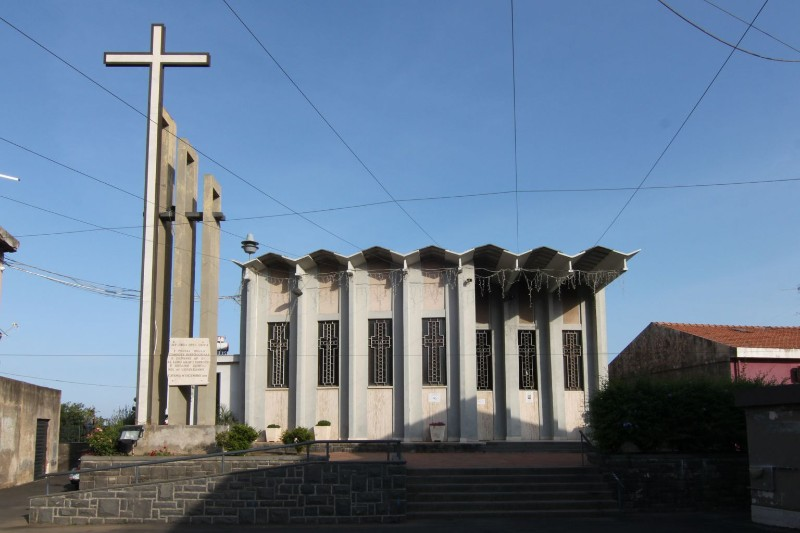
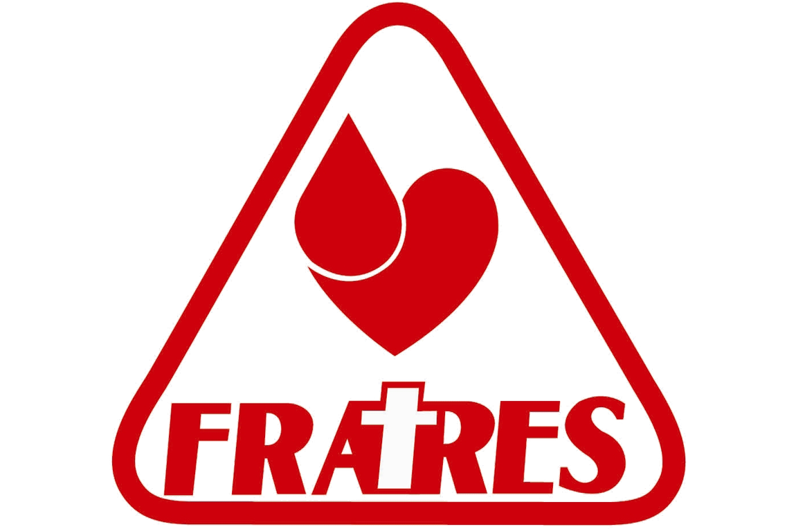

Lo sponsor principale che ci ha permesso di realizzare il nostro spettacolo e ci ha seguito fin dall'inizio della realizzazione di tutto cio è la parrocchia S. Giovanni Apostolo,al seguito del parroco siamo riusciti a realizzare l'opera, fornendoci una guida esperta necessaria per realizzare il tutto.
La FRATRES, o Consociazione Nazionale dei Gruppi Donatori di Sangue Fratres delle Misericordie d'Italia, Stringe un accordo con i responsabili del progetto, per un intervento durante lo spettacolo atto a promuovere le attività di donazione.
Copisteria Einstein,Sposa la causa benefica e aiuta i teatranti, fornendogli tutto ciò che può uscire da una stampante.